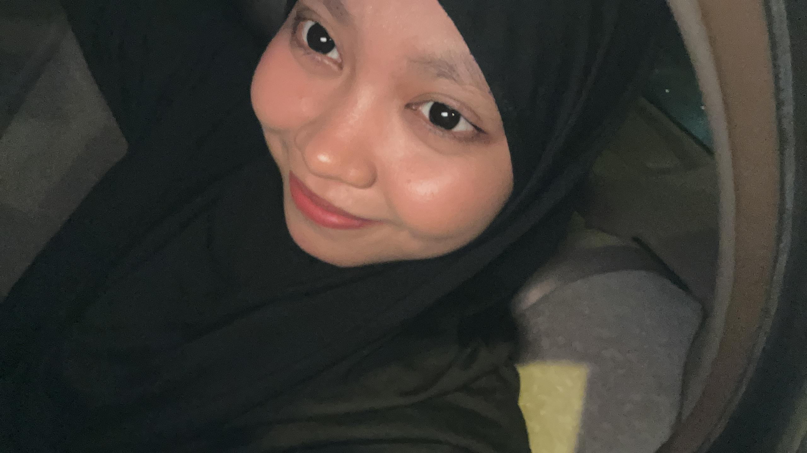

Home
Biodata
Work Experience
Education
Family
Gallery
Contact
Biodata
About Me
Name:
Nurfarahanie binti Mohd Tarmizi
Age:
23
Date of Birth:
02 December 2002
Place of Birth:
Kuala Lumpur, Malaysia
Hometown:
Kedah
Fun Fact:
When life gets messy, I grab a netball and play it out! 🏐

Click Here to Get to Know Me!
This video shares a little piece of my journey.
Your browser does not support the video tag.
▶️ Watch My Story